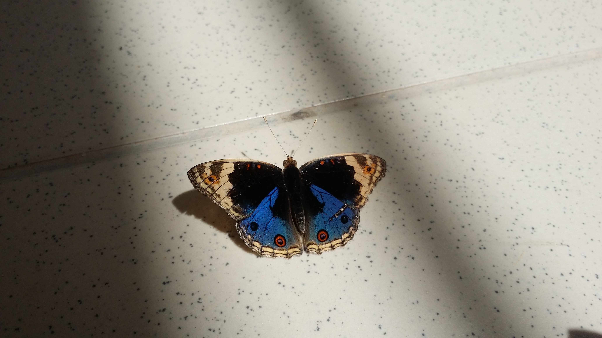
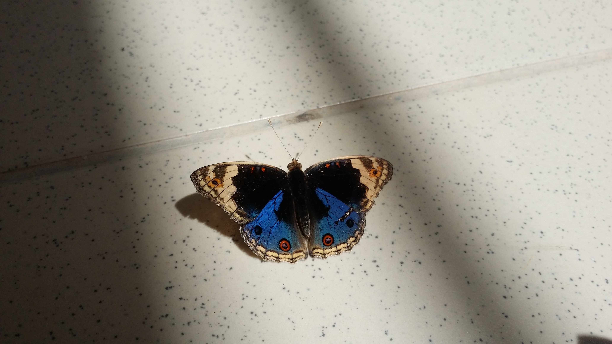

P R O F I L E
About Me
I am Intan Nurfarhanis. A fresh graduate student from UiTM Johor.I have experiences in involving myself in the multimedia field. My experiences consists of the entry in the Landmark competition held by UiTM Johor and Pasir Gudang as well as the multimedia project of my courses. I would love to involve more in the world of graphic design and photography to pour every knowledge that I get from learning in my University and contribute something big in the place that I step on. I am also experiencing in developing a website and writing coding in different languages. |